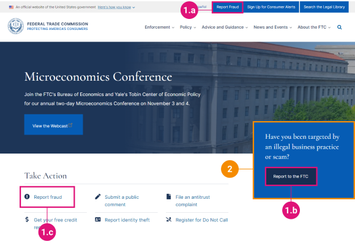
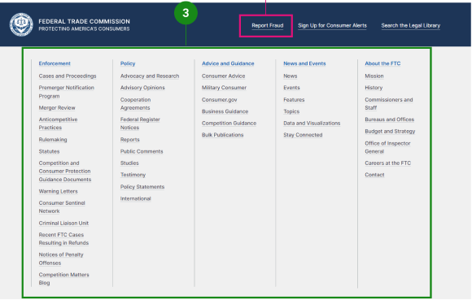
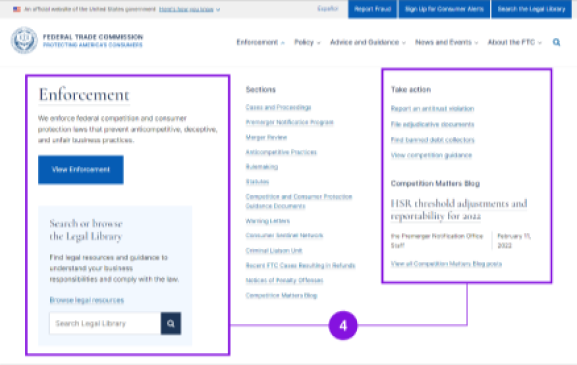
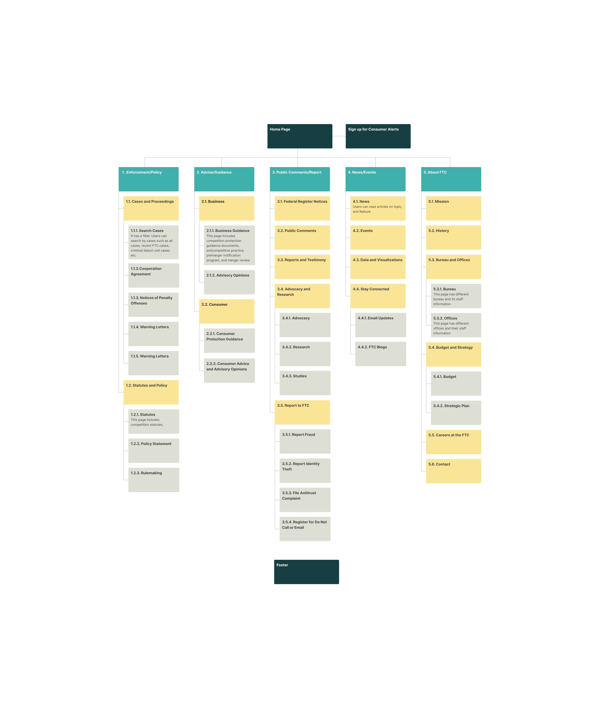
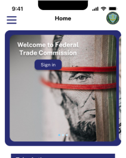
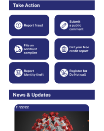
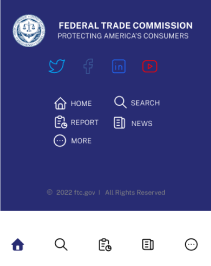
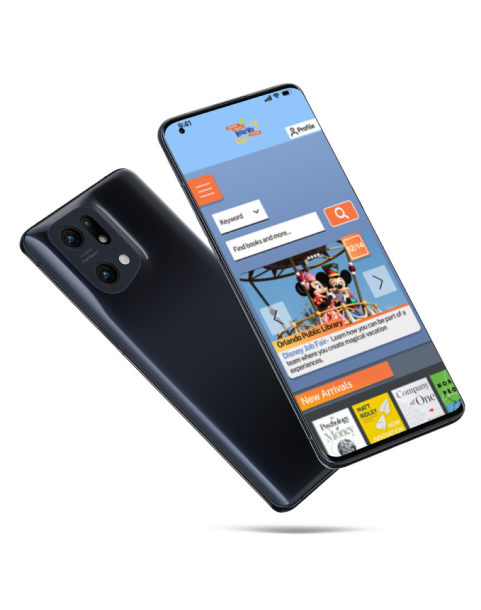

Project Overview
Problem
Solution
User Statement

User Testing
UI Pain Points (Heuristic Issues)
- 1. Aesthetic and minimalist design - Get ride of 2 of “Report Fraud” buttons
- 2. Help and documentation issues - Need live chatbot. It will be easy for users to search and focus on the their tasks.
- 3. Match between system and the real world issues - Ensure users can understand the meaning without having to go look up a word’s definition
- 4. Many unnecessary elements on the sub-navigation bar - Get rid of all the unnecessary elements



Redesign Process
“This sitemap looks great - however, I am concerned about how you might display the tertiary navigation especially since there's so much about it. Think about how people would try to find a page called 'Notices of Penalty Offenses'. Does it make sense to go under Enforcement/Policy and then Cases and Proceedings? The page is almost hidden within the navigation.”
Original
Iterated
Redesign iterations

The "home" page




Style Guide
Typography


Color Palette
Buttons

Usability Test
I was very intrigued to see that the pain points and features the testers requested were fulfilled in my prototype. It was interesting how important the contact information for users.
“I think the homepage looks great and I love the interaction nav. I also love the hovering cards. For the contact, you need to simplify, if you want it to. Even the text, the users would take time to read it. It would be better more straight for. I would also like the font in the contact menu a little bit bigger for accessibility”
“It’s a bit confused to find the contact information but the government website has so many menus. It is hard to navigate no matter what.”

Final Design
After the last usability test, I iterated all features that testers pointed out such as bigger font, and easier way to find contact information that the users need.
The final high-fidelity prototype can be tested below. Feel free to try out.
Mobile Version
Desktop Version
Takeaways
Onboarding tutorial for navigation
Redesign other features
All in one website
More Work

